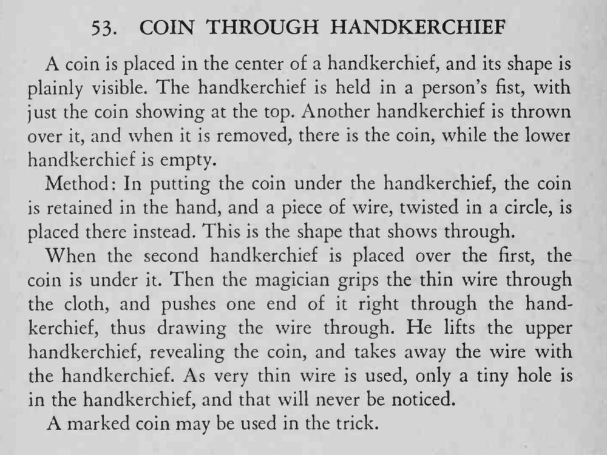

硬币隔着手帕显出轮廓，握在观众拳中；再盖上第二条手帕，取下时硬币竟在上面的手帕里，下面那条空了。
铁丝越细越好，穿出的孔只有针尖大小，才不会被看出来。

A coin is placed in the center of a handkerchief, and its shape is plainly visible. The handkerchief is held in a person's fist, with just the coin showing at the top. Another handkerchief is thrown over it, and when it is removed, there is the coin, while the lower handkerchief is empty. Method: In putting the coin under the handkerchief, the coin is retained in the hand, and a piece of wire, twisted in a circle, is placed there instead. This is the shape that shows through. When the second handkerchief is placed over the first, the coin is under it. Then the magician grips the thin wire through the cloth, and pushes one end of it right through the handkerchief, thus drawing the wire through. He lifts the upper handkerchief, revealing the coin, and takes away the wire with the handkerchief. As very thin wire is used, only a tiny hole is in the handkerchief, and that will never be noticed. A marked coin may be used in the trick.